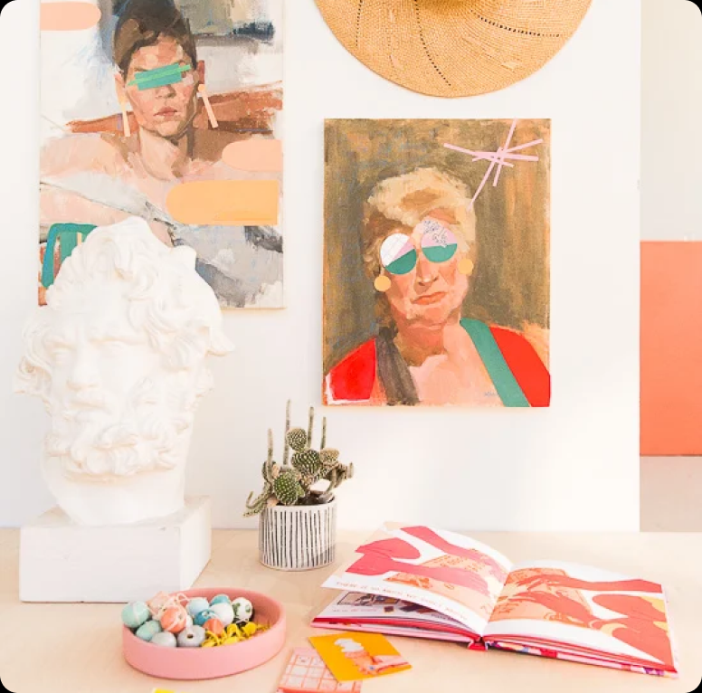
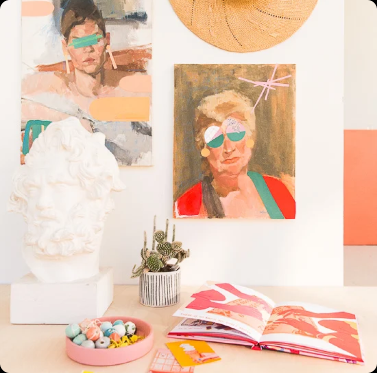

Home > Home Decoration > Project Inspiration > Intermediate
 

Maximize storage and organization in your home with custom-built shelving solutions that are as stylish as they are functional. Start by assessing your space and identifying areas where additional storage is needed, such as closets, pantries, or entryways. Design your shelving unit to fit the dimensions and layout of the space, incorporating features like adjustable shelves, cubbies, or built-in lighting to suit your needs. Choose high-quality materials like wood, metal, or wire that complement your decor style and budget. Build the shelves using basic woodworking tools and techniques, ensuring stability and durability. Customize your shelving with decorative elements like brackets, trim, or paint to add personality and charm. Whether you're organizing a cluttered closet or creating a display for your favorite collectibles, custom-built shelving solutions are a practical and stylish way to enhance your home decor.
Start by painting sheets of paper (or sections of paper, if you have larger pieces) in solid colors that would be a good fit for the painting or print you’re working with. You want to choose colors that will work well with the color scheme in the existing piece, so that it feels cohesive. You don’t have to stick to the exact same colors that are already in the artwork by any means, just keep that color palette in mind when painting new sheets of color to use.
While you’re waiting for the paint to dry, you can use tracing paper to trace outlines of the portrait itself, the bust, or the surrounding area to get a better idea of the sizing needed, various shapes you might want to create, etc. Once the paint is dry from step 1, you can freeform shapes directly onto the painted paper. OR turn the paper over so the painted part is face down, and then turn your tracing paper over to the wrong side as well and retrace over the pencil marks. This should release some graphite onto the paper to give you a cutting guide, etc.
Then, cut out your shapes using a pair of scissors. I used the Fiskars Orange-handled Scissors for this project. And in case you’re curious… yes I actually use these specific scissors A LOT for DIY projects! My grandma and mom both used these exact scissors for pretty much everything when I was growing up. And it must have rubbed off on me because I probably have 5 or 6 pairs of these guys between the studio and home. They’re under $20, super sharp (stainless-steel blades offer a lasting sharp edge that cuts all the way to the tip) and work on lots of different materials (paper, fabric, household projects, etc). And did you know, when the Orange-handled Scissors were introduced in 1967, they were the world’s first plastic-handled scissors?
Then lay the cut paper pieces over the painting or print until you have a design that you like. You may need to play around with this for a while to find an arrangement that works best. And if you find that you like a particular shape but maybe not in the color that you’ve used, you can always paint over the color you started with to get a better match.
Next, apply a liberal amount of matte medium (which will act as a glue) with a paint brush to the back of each paper piece and apply it to the surface of the painting or print. Press down for 15-30 seconds to help the paper stick to the surface. Repeat this process with all of your paper cut outs until you’ve created your desired design.
Once dry, apply an additional coat of matte medium over the top of the paper collage pieces to seal them in. Let dry and then it’s ready to hang. This would also be a good time to add any additional drawing, etc on top on the layered collage to bring everything together (if needed). I added some line work and writing to both pieces, using a blue pencil.